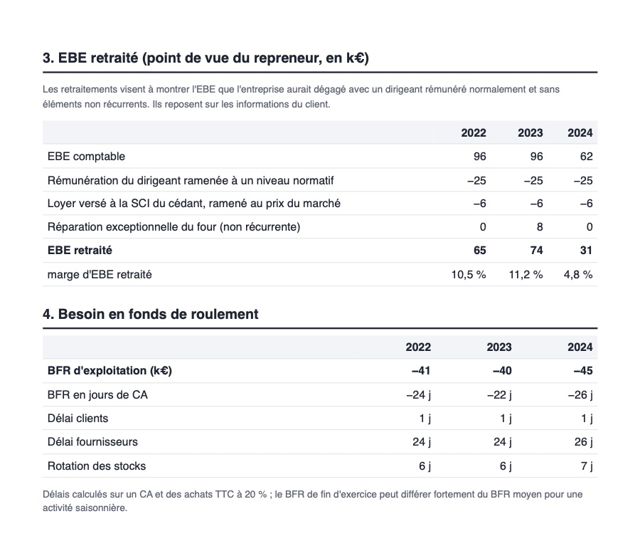
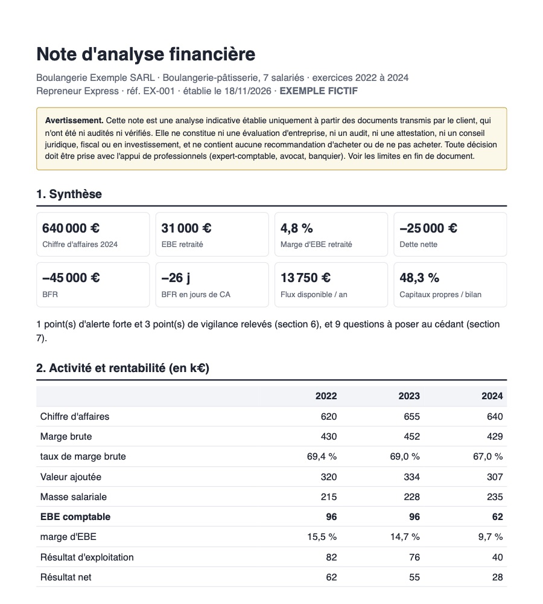

Note d'analysePour trier un dossier
49 €- Note PDF de 4 à 6 pages
- Livrée sous 48 h ouvrées
- Questions au cédant
Vous étudiez le rachat d'une PME ? Envoyez 2 ou 3 bilans. Sous 48 heures, vous recevez une note claire qui montre ce que gagne vraiment l'entreprise, ce qu'elle doit, et les questions à poser au cédant.
Analyse indicative, pas une évaluation : nous ne fixons aucun prix.
| FL | Chiffre d'affaires net | 640 000 |
| FY | Salaires et traitements | 175 000 |
| FZ | Charges sociales | 60 000 |
| GG | Résultat d'exploitation | 40 000 |
| HN | Bénéfice | 28 000 |
4 à 6 pages, en français courant, avec les chiffres des 2 ou 3 derniers exercices côte à côte.
Voici les premières pages de la note d'exemple. La vôtre a la même forme, avec les chiffres de l'entreprise que vous étudiez.


EBE retraité 31 k€ au lieu de 62 k€ : c'est ce chiffre qu'un banquier regardera.
Par e-mail : l'entreprise, la formule choisie et les documents dont vous disposez. Deux minutes suffisent.
Bilans et comptes de résultat des 2 ou 3 derniers exercices (liasse fiscale ou comptes publiés). S'ils sont confidentiels, nous signons d'abord un engagement de confidentialité.
Sous 2 jours ouvrés après réception d'un dossier complet.
TVA non applicable, art. 293 B du CGI. Paiement uniquement après confirmation de votre dossier.
| C'est | Ce n'est pas |
|---|---|
| Une lecture chiffrée et pédagogique des comptes transmis | Une évaluation ou un prix de l'entreprise |
| Un tri rapide avant d'engager des frais d'expert | Un audit, une attestation ou un avis d'expert-comptable |
| Une liste de questions pour négocier mieux informé | Un conseil juridique, fiscal ou en investissement |
La note repose uniquement sur les documents que vous fournissez, sans vérification. Pour décider d'un achat, faites-vous accompagner par un expert-comptable, un avocat et votre banque.
Le cédant ou son intermédiaire vous les transmet généralement après la signature d'un accord de confidentialité. Certaines sociétés publient aussi leurs comptes au greffe, consultables gratuitement en ligne.
Parce que la note ne remplace pas une mission d'évaluation ou d'audit : elle vous aide à trier les dossiers et à préparer vos questions avant d'engager des frais plus importants.
Oui. Ils ne sont utilisés que pour votre note, jamais publiés, et supprimés 3 mois après la livraison (ou plus tôt sur demande).
Nous vous prévenons avant de commencer. Si la note ne peut pas être réalisée, vous êtes remboursé.
Les PME et TPE françaises qui établissent un bilan et un compte de résultat : commerces, artisanat, services, industrie légère. Pas les holdings complexes ni les comptes consolidés.
Décrivez votre dossier en 2 minutes. Je vous confirme sous 24 h la faisabilité et le délai. Vous ne payez qu'après cette confirmation.
Une question avant de réserver ? Écrivez à contact@repreneurexpress.fr
Repreneur Express fournit une lecture chiffrée des comptes et une liste de questions à poser au cédant. Ce n'est ni une évaluation, ni un audit, ni un conseil en investissement.